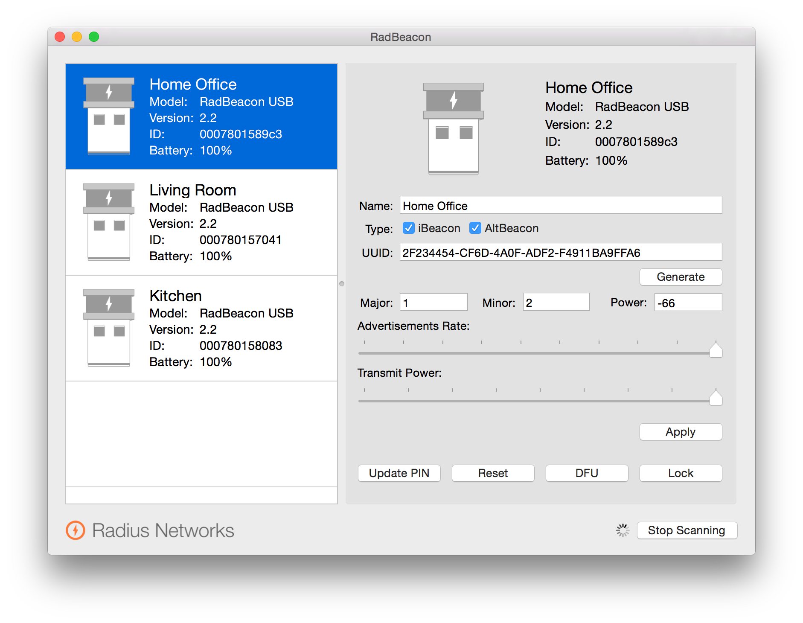
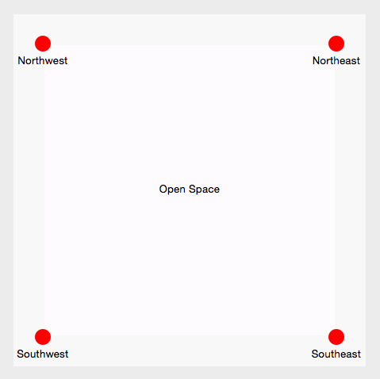

Flare can use several different technologies for calculating the indoor location of devices. Beacons are the fastest and cheapest way to get started.
Beacons are tiny devices that transmit a signal over Bluetooth at regular intervals. A device can measure the signal strength of three or more beacons at known locations to determine its own location. The device can then send its location to the Flare server, which can then push the location to other things.
The Flare sample code for iOS uses Apple's iBeacon standard, while the sample code for Android uses Radius Networks' AltBeacon standard. We recommend beacons from Radius Networks that are compatible with both standards.
Environments have a coordinate space that extends across the entire plane of a single location, such as one floor of a building. Environments can be divided into zones, corresponding to rooms or sections of an open space.
Each zone should have beacons distributed as evenly as possible along a grid, starting with the far corners. For example, if you have four beacons you could place them in the corners only. If you have eight beacons, you could also put a beacon in the middle of each edge. If you have sixteen beacons, you could make a 4 x 4 pattern, etc.
Note that all beacons in an environment can be used to determine the user's position and which zone they are currently in, so beacons can be placed along the common edges of two zones.
Beacons broadcast a signal that has three data values:
These values can be configured with software from the manufacturer of the beacons. For example, here's a screenshot of RadBeacon from Radius Networks.
In Flare, these values should be configured as follows:
Here is an example:
{
"name": "Building",
"data": {"uuid": "2F234454-CF6D-4A0F-ADF2-F4911BA9FFA6"},
"perimeter": {
"origin": {"x": -1, "y": -1},
"size": {"height": 12, "width": 12}
},
"zones": [
{
"data": {"major": 1},
"name": "Open Space",
"perimeter": {
"origin": {"x": 0, "y": 0},
"size": {"height": 10, "width": 10}
},
"things": [
{
"data": {"minor": 1},
"name": "Northwest",
"position": {"x": 0, "y": 10}
},
{
"data": {"minor": 2},
"name": "Northeast",
"position": {"x": 10, "y": 10}
},
{
"data": {"minor": 3},
"name": "Southwest",
"position": {"x": 0, "y": 0}
},
{
"data": {"minor": 4},
"name": "Southeast",
"position": {"x": 10, "y": 0}
}
]
}
]
}
The values above will generate an environment like this:
You can find the distance to nearby beacons on iOS using the CoreLocation framework. The BeaconManager class in the Flare framework handles most of these tasks for you.
import Flare
import CoreLocation
class ViewController: UIViewController, FlareManagerDelegate, BeaconManagerDelegate {
var flareManager = FlareManager(host: host, port: 1234)
var beaconManager = BeaconManager()
var environment: Environment?
var device: Device?
override func viewDidLoad() {
flareManager.delegate = self
beaconManager.delegate = self
flareManager.connect()
flareManager.getEnvironment("123") {json in
self.environment = Environment(json: json)
self.beaconManager.loadEnvironment(self.environment)
self.beaconManager.start()
}
flareManager.getDevice("789", environmentId: "123") {json in
self.device = Device(json: json)
}
}
override func viewDidAppear(animated: Bool) {
beaconManager.start()
flareManager.connect()
}
override func viewDidDisappear(animated: Bool) {
beaconManager.stop()
flareManager.disconnect()
}
func devicePositionDidChange(position: CGPoint) {
if device != nil {
device!.position = position
flareManager.setPosition(device!, position: position)
}
}
}
In the code sample above, the ViewController class is a delegate of both the FlareManager and the BeaconManager. The FlareManager connects to the Flare API, while the BeaconManager scans for nearby beacons and calculates the position of the device.
When an environment has been loaded from the FlareManager, the app calls loadEnvironment() to tell the BeaconManager which beacons to scan for, and where they are located. It then calls start() to start scanning.
When the BeaconManager determines the device's position, it calls the delegate method devicePositionDidChange() with the new position. Normally this happens once per second. The app can then tell the FlareManager to notify the server that the device's position has changed.
When the app is moved into the background, it disconnects the FlareManager and stops the BeaconManager. When it returns to the foreground, it re-connects the FlareManager and re-starts the BeaconManager.